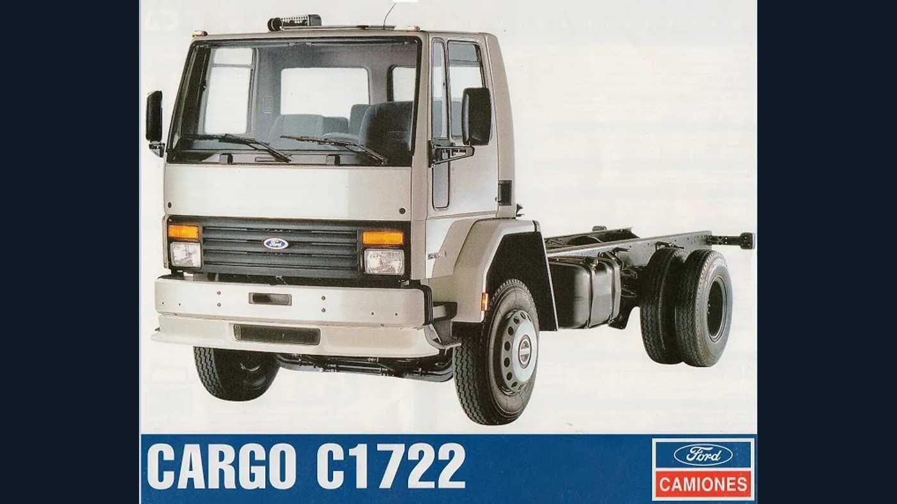
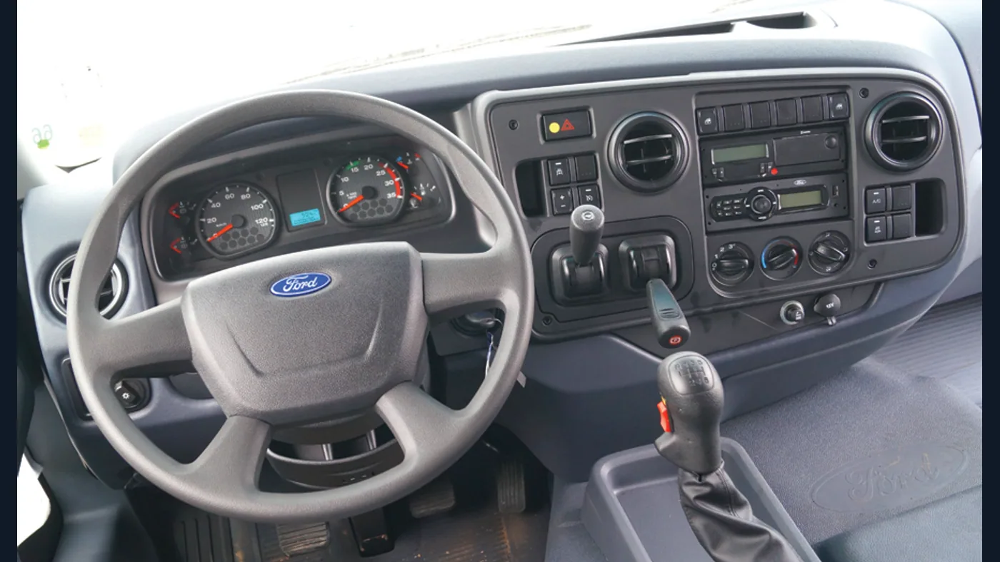

Hay camiones cuya historia no se entiende mirando solamente su año de lanzamiento. El Ford Cargo 1722 y su evolución electrónica, conocida como 1722E, pertenecen a ese grupo: detrás de sus nombres aparecen una breve etapa industrial argentina, cambios de motor y dos imágenes de cabina muy distintas. Reconstruir ese recorrido permite entender por qué dos unidades identificadas como 1722 pueden ser diferentes por dentro.
Esta historia se concentra en los modelos comercializados en Argentina y en su vínculo con la producción brasileña. Las fechas de presentación, las configuraciones y las denominaciones no siempre coinciden entre países. Tampoco deben confundirse el año de fabricación de una unidad, su patentamiento y el momento en que apareció una generación.
Los antecedentes: cómo llegó la familia Cargo
La crónica de lanzamiento de LA NACION de abril de 2011 sitúa la llegada del Cargo a Brasil en 1985 y su presentación argentina en 1995. Esas fechas corresponden a la familia, no al nacimiento particular del 1722. El mismo registro distingue una actualización de gama en 2000 y la incorporación de motores electrónicos en el mercado argentino en 2007.
Es importante conservar esa diferencia: Cargo es una familia que reunió distintas capacidades y aplicaciones; 1722 identifica una propuesta dentro de ella. Contar la historia de todos los Cargo como si se tratara del mismo camión borra justamente las transformaciones que interesan al propietario de una unidad concreta.
1999 y 2000: el capítulo de General Pacheco
La reconstrucción histórica de MotorMagazine ubica el inicio de la fabricación argentina del 1722 en 1999, en General Pacheco. La experiencia duró aproximadamente un año y medio y terminó en 2000, en un contexto de recesión. El medio lo señala como el único Cargo producido en el país y el último camión Ford de fabricación argentina; después continuó el abastecimiento desde Brasil.
El archivo Camión Argentino también registra el período 1999-2000 y conserva material publicitario de aquella etapa. Su valor histórico está en mostrar un producto que no fue solamente importado: durante un lapso acotado tuvo una relación directa con la industria nacional.

El 1722 clásico y el Cummins de 8,3 litros
La etapa inicial se asocia al Cummins de la familia 6CT/6CTAA, de aproximadamente 8,3 litros. El catálogo del fabricante Filtros Mareno documenta aplicaciones del 1722 con ese motor, mientras que el archivo histórico identifica el 6CTAA en el modelo nacional. Esa combinación pertenece a la etapa de inyección mecánica y no debe confundirse con el posterior seis cilindros electrónico.
La distinción de cilindrada es más importante de lo que parece. Cuando alguien recuerda un “1722 con Cummins”, todavía falta información para identificarlo: el fabricante del motor y el número del camión no alcanzan para determinar qué conjunto lleva instalado. El nombre comercial sobrevivió a una transformación mecánica importante.
Por eso tampoco corresponde trasladar automáticamente una ficha técnica encontrada para un 1722 tardío a un ejemplar de la etapa nacional. Una historia rigurosa debe reconocer esa continuidad del nombre, pero también sus discontinuidades técnicas.
1722E: qué cambió con la electrónica
La E distingue la etapa electrónica; no significa que sea un camión eléctrico. En la documentación Ford Cargo de noviembre de 2007, el 1722e aparece con un Cummins ISBe6 de 5,9 litros, seis cilindros en línea y alimentación comandada electrónicamente. El manual consigna 220 CV y 820 Nm para esa versión.
El manual de implementadores de Ford utiliza también la denominación Interact 6 220 P5 y describe inyección common rail. Es una referencia documental útil para comprender las denominaciones que aparecen en fichas de época, sin convertirlas en una afirmación de intercambiabilidad entre todos los componentes.
El cambio no consistió en agregar una computadora al mismo motor de 8,3 litros. Se trató de una evolución de la motorización y de su gestión. Esta diferencia explica por qué conviene separar los dos capítulos de la historia y por qué la letra E aporta información, aunque nunca reemplace la identificación del vehículo.
La transición también cambió la relación con el taller. Para interpretar una unidad electrónica no basta con reconocer su aspecto exterior: hay que consultar la documentación del sistema instalado. Al reconstruir la vida de un usado, conviene conservar tanto los registros de mantenimiento como los de reparaciones o sustituciones de conjuntos.
2011: otra cabina, sin empezar de cero
La renovación presentada en 2011, identificada como línea Cargo 2012, adoptó el lenguaje Kinetic Design. LA NACION anunció su comercialización argentina desde mayo y describió un frente completamente nuevo, mayor espacio interior y versiones con dormitorio de fábrica. Fue un cambio visible de identidad, no el comienzo de la etapa electrónica: esa motorización ya existía antes.
Esta es una de las confusiones más habituales al hablar de 1722 y 1722E. “Electrónico” y “cabina nueva” no son sinónimos. Además, la denominación 1722 siguió apareciendo en la comunicación comercial de la generación renovada, incluso cuando no se destacaba la E.

La experiencia del conductor también forma parte de la historia
La prueba de MotorMagazine de 2015 se realizó con una unidad con dormitorio y permite observar el interior de la generación renovada. Sus fotografías muestran el tablero y la disposición del puesto de conducción, además de la diferencia exterior frente a la cabina clásica. No deben tomarse como prueba de que todos los ejemplares tenían exactamente el mismo equipamiento.
Al mirar ambas generaciones juntas, la evolución deja de ser una lista de potencias. La cabina es el lugar donde transcurre la jornada: acceso, posición de manejo, controles y espacio disponible también definen la relación entre conductor y vehículo. Esa dimensión merece un lugar junto al motor cuando se recuerda un camión de trabajo.
1722 y 1722E: las diferencias, en resumen
- Etapa clásica: asociada al Cummins de la familia 6CT/6CTAA de 8,3 litros y a la cabina original.
- Etapa electrónica: documentada con el seis cilindros de aproximadamente 5,9 litros y gestión electrónica; no debe confundirse con el motor anterior.
- Renovación de cabina: presentada en 2011, posterior a la incorporación de la electrónica.
- Denominación comercial: la ausencia de una E en un aviso o emblema no demuestra por sí sola que el motor sea mecánico.
- Identificación correcta: requiere año, número de chasis, placa del motor y configuración; no solamente el nombre publicado.
2016: el paso a la línea Euro V
El 17 de febrero de 2016, Ford Argentina presentó la línea Cargo Euro V. En ese nuevo capítulo apareció el 1723, con alternativas 4x2 de cabina normal o dormitorio y transmisión manual o automatizada. El anuncio describía motores Cummins ISBe6 de 6,7 litros para la nueva gama, con potencias desde 230 CV y tratamiento de emisiones mediante SCR.
El 1723 permite ubicar el relevo comercial, pero no debe describirse como un 1722E al que simplemente le cambiaron el número. La propuesta de motorización, emisiones y versiones había evolucionado. Tampoco corresponde atribuir al 1722 todas las configuraciones anunciadas para su sucesor.
2019: el cierre de la etapa industrial regional
El 19 de febrero de 2019, Ford anunció su salida del negocio de camiones pesados comerciales en Sudamérica y el cese de producción en São Bernardo do Campo durante ese año. El comunicado indicaba que las ventas de Cargo, F-4000 y F-350 terminarían una vez agotados los inventarios, y que continuaría el apoyo a clientes mediante garantía, repuestos y servicio.
Ese anuncio cerró un capítulo regional de la marca. No significa que todos los 1722 se fabricaran hasta 2019, ni que la decisión describa la totalidad de las operaciones de camiones Ford en otros mercados.
Cronología para recordar
- 1985: lanzamiento de la familia Cargo en Brasil.
- 1995: presentación argentina de la familia.
- 1999-2000: breve fabricación del 1722 en General Pacheco.
- 2007: incorporación de motores electrónicos a la línea argentina, según la crónica contemporánea; el manual de ese año documenta el 1722e.
- 2011: presentación de la nueva cabina, como línea 2012.
- 2016: nueva etapa Euro V y aparición del 1723.
- 2019: anuncio de salida de Ford del negocio regional de camiones pesados.
Su legado: un nombre, varias generaciones de trabajo
Mirada de Zabala Repuestos. Lo interesante del 1722 no es reducirlo a una afirmación de que “todos salieron buenos” o a una cifra de kilometraje imposible de garantizar. Su historia reúne cambios industriales, mecánicos y de diseño bajo un nombre que muchos transportistas reconocen. Entender esas etapas permite hablar del camión con más precisión y valorar cada ejemplar por lo que realmente es.
Para quien conserva uno, reconstruir su historial también es una forma de preservar esa historia: origen, documentación, trabajos realizados y configuración actual. Para quien busca repuestos, esos mismos datos ayudan a formular una consulta correcta, sin asumir compatibilidades por el parecido exterior.
El Cargo 1722 y el 1722E se comprenden mejor juntos, pero no confundidos. El primero permite recordar la etapa clásica y el breve capítulo nacional; el segundo muestra la transición electrónica. La cabina renovada añadió otra transformación visible. Ese recorrido, con sus continuidades y diferencias, es lo que convierte al modelo en una historia relevante del transporte argentino.